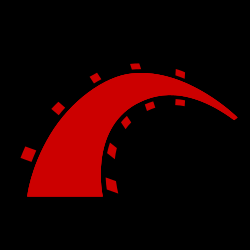
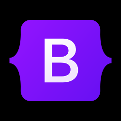

Global Collaborator
From Dourados, Brazil, to international teams, my passion is to create solutions that work across borders. My experience at Procore and Onehub taught me how to build high-quality software while respecting and appreciating cultural differences.
Ruby on Rails Engineer
Remote Work
International Teams
Experience Highlights
2024
Procore Technologies
- Led email system migration from SendGrid to Braze.
- Developed documentation for email flows.
- Implemented localization for multilingual support.
- Created new email templates in Braze.
- Used Scrum to manage dev cycles.
2023
SRS Acquiorn
- Implemented group permissions features.
- Used jQuery, Backbone.js, and Rails views.
- Developed micro-frontends for modularity.
- Added performance optimizations.
- Prototyped new technical solutions.
2021
Nobordist
- Built integrations with partners like Amazon.
- Improved frontend responsiveness using VueX.
- Created ZPL labels and tested finance systems.
- Used agile methods to manage workflows.
2015
Jambo/IO
- Built authentication/payment systems with Rails.
- Integrated with Pagarme and Pagseguro.
- Used PostgreSQL, Redux for scalable apps.
- Tested systems using RSpec and Jest.
Technologies I Work With
 Ruby on Rails
React Native
Vue
JavaScript
Heroku
AWS
Docker
PostgreSQL
 Bootstrap
Tailwind
Bitbucket
Agile
LaunchDarkly
Braze
Tugboat
Beyond Code
As a volunteer at the Bahá'í World Centre, I cultivated both gardens and cross-cultural relationships. This experience informs my approach to software development - patient, detail-oriented, and always considering the human element.